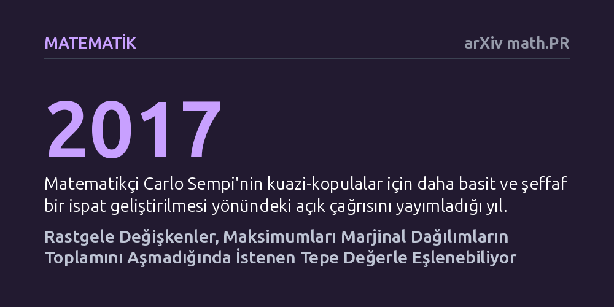

MATEMATIK · arXiv math.PR · 2026-10-24
Çalışma, çok değişkenli kuazi-kopulaların klasik karakterizasyonu için daha sade ve olasılıksal bir ispat geliştirmeyi amaçlıyor. Araştırmacı, rastgele değişkenlerin hedeflenen bir maksimumla eşlenebilmesinin, maksimumun bileşenlerden küçük olmaması ve marjinal toplamı aşmaması koşuluna bağlı olduğunu gösteriyor.
Çok değişkenli bağımlılık yapılarının modellenmesinde uzun süredir başvurulan teknik ve dolambaçlı analizlerin yerine, temel olasılık ve eşleme mantığıyla çok daha şeffaf ve sezgisel bir yaklaşımın mümkün olduğunu gösteriyor.

Modern olasılık teorisinde ve risk analizinde, birden fazla değişkenin aynı anda nasıl hareket ettiğini belirlemek en temel problemlerden biridir. Örneğin finansal piyasalarda hisse senedi getirileri, faiz oranları ve emtia fiyatları gibi farklı süreçlerin arasındaki karmaşık bağımlılık yapılarını çözebilmek için kopulalar ve bunların daha esnek bir genellemesi olan kuazi-kopulalar kullanılır. Ancak çok değişkenli kuazi-kopulaların matematiksel sınırlarını ve varlık koşullarını tanımlayan klasik karakterizasyonlar, literatürde uzun yıllardır son derece teknik, dolambaçlı ve takip edilmesi güç analizlerle açıklanmaktaydı.
İtalyan matematikçi Carlo Sempi, 2017 yılında yayımladığı çalışmasında bu karmaşık duruma dikkat çekerek, bu yapıların çok daha yalın, şeffaf ve doğrudan olasılık teorisinin sezgisel ilkelerine dayanan bir kanıtla temellendirilmesi gerektiğini belirten açık bir çağrıda bulunmuştu. Jonathan Ansari’nin bu çalışması, Sempi’nin çağrısına doğrudan yanıt vererek, kuazi-kopulaların altında yatan bağımlılık mekanizmasını gereksiz soyutlamalardan arındırmayı ve doğrudan olasılıksal bir temele oturtmayı hedefliyor.
Araştırmacı, sorunun çözümü için fonksiyonel analizin ağır cebirsel araçları yerine olasılık kuramının en zarif tekniklerinden biri olan eşleme (coupling) yöntemine başvuruyor. Eşleme yaklaşımı, tekil olarak davranışları bilinen ancak aralarındaki ortak bağ henüz kurulmamış rastgele değişkenleri, ortak bir olasılık uzayında tutarlı bir ilişkiyle bir araya getirmeyi amaçlar.
Bu araştırmada kurulan teorik model, her bir bileşenin marjinal dağılımı sabit tutulurken, bu bileşenlerin alabileceği en büyük değerin (maksimumun) dağılımının da önceden belirlendiği özel bir yapıya dayanıyor. Yazar bu kurguyu yaparken herhangi bir dağılım kısıtı getirmeksizin, keyfi dağılımlar üzerinde maksimum yasasının ayrıştırılması ve monoton kantil eşlemeleri yöntemlerini kullanarak analitik bir varlık inşası gerçekleştiriyor.
Çalışmanın elde ettiği temel teorem, rastgele değişkenler ile hedeflenen maksimum dağılımının ortak bir yapıda ne zaman birleşebileceğini kesin bir 'gerek ve yeter' koşulla ortaya koyuyor. İspata göre bu tür bir eşlemenin var olabilmesi için yalnızca iki koşulun sağlanması yetiyor: İlki, belirlenen maksimumun her bir bileşenden stokastik olarak küçük olmaması; ikincisi ise maksimumun dağılımının tekil marjinal ölçülerin toplamı tarafından sınırlandırılmasıdır.
Yazar, bu iki basit koşul sağlandığında hedeflenen maksimuma sahip ortak bir olasılık dağılımının kesinlikle inşa edilebileceğini matematiksel olarak kanıtlıyor. Bu ispat, kuazi-kopulaların doğasını anlamak için daha önce kullanılan karmaşık analitik sınırlandırmaların aslında bu iki temel olasılıksal eşitsizliğin doğal bir sonucu olduğunu gösteriyor.
Elde edilen ana sonucun doğrudan bir uzantısı olarak yazar, artan bir hat (increasing track) boyunca önceden belirlenmiş değerlere sahip kopulaların varlığını da türetiyor. Bu çıkarım, özellikle finansal risk modellemesinde veya sigortacılıkta aşırı uç olayların, ortak çöküş senaryolarının ve stres testlerinin modellendiği durumlarda, analistlerin belirli kısıtlar altında tutarlı bağımlılık yapıları tanımlamasını matematiksel güvence altına alıyor.
Sempi’nin 2017’deki çağrısını başarıyla yanıtlayan bu kısa ve berrak ispat, kuazi-kopulaları soyut ve anlaşılması güç bir cebirsel nesne olmaktan çıkarıp doğrudan olasılık sezgisiyle kavranabilir bir araç haline getiriyor. Böylece araştırmacılar, çok değişkenli riskleri ve belirsizlikleri modellerken daha sade, doğrulanabilir ve sağlam bir kuramsal zemine kavuşmuş oluyor.